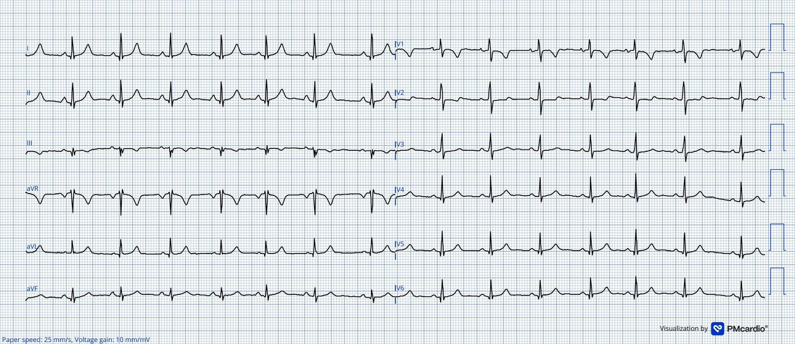
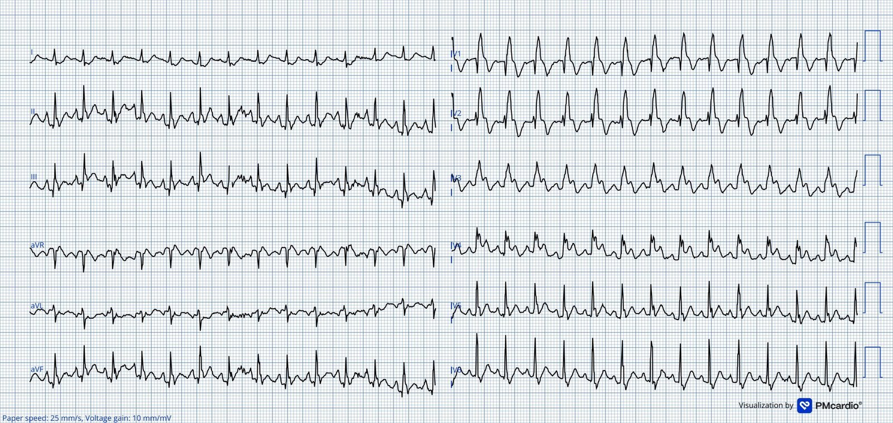
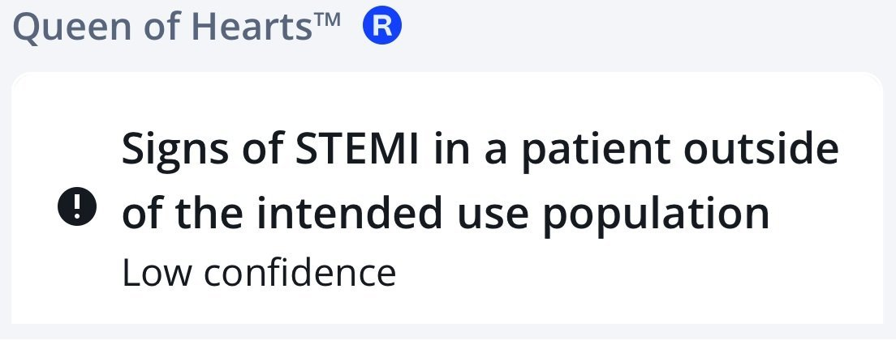
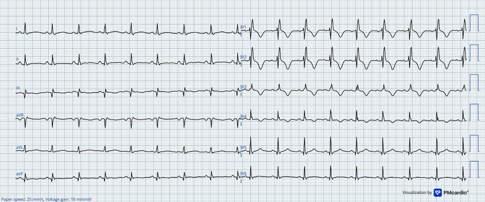
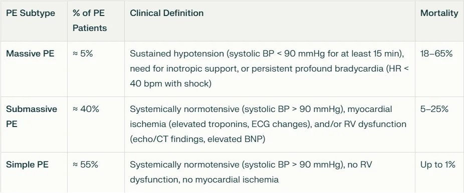
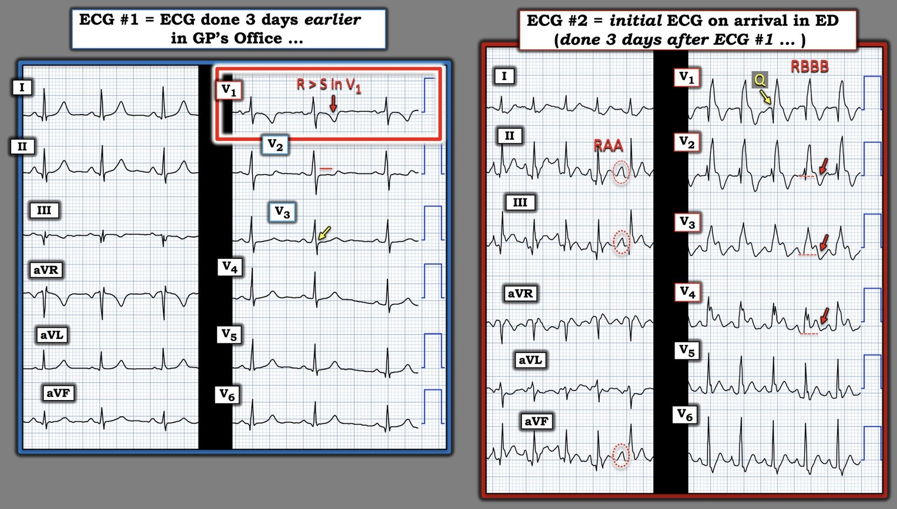
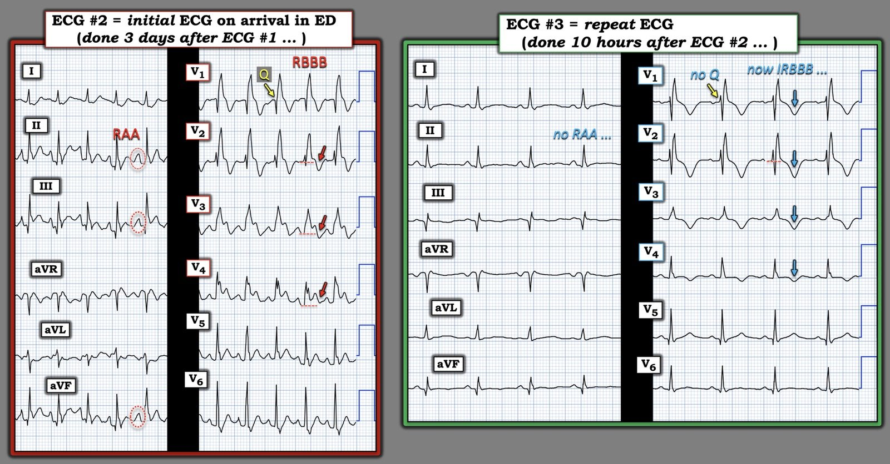

05/06/2026 — Khó thở, ngất và ST chênh lên ở một phụ nữ trẻ
Bản dịch tiếng Việt của bài "Dyspnea, syncope and ST-elevation in a young female" – Dr. Smith’s ECG Blog. Giữ nguyên toàn bộ 7 hình ảnh của bản gốc.
Tác giả: Magnus Nossen
Một phụ nữ ở độ tuổi ba mươi gọi dịch vụ cấp cứu vì khó thở tăng dần. Chị cho biết đang mang thai và lúc đầu cho rằng các triệu chứng là do thai kỳ. Vài ngày trước đó, chị đã đến khám bác sĩ chăm sóc ban đầu, tại đây được ghi điện tâm đồ 12 chuyển đạo. Do khó thở nặng lên nhanh trong vài ngày gần đây, chị quyết định tìm trợ giúp y tế cấp cứu.
Dưới đây là điện tâm đồ 12 chuyển đạo ghi ba ngày trước đó tại phòng khám bác sĩ đa khoa của chị. Điện tâm đồ này được mô tả là bình thường. Bạn nghĩ sao?
Điện tâm đồ #1


Điện tâm đồ này cho thấy nhịp xoang tần số 80 lần/phút. Có sóng T đảo ngược (TWI) ở chuyển đạo V1 và III. Ở V1 có R>S, đây là bất thường. Trục QRS là 5 độ và trục sóng T là 23 độ. Như vậy góc QRST nhỏ, nghĩa là TWI ở chuyển đạo III có thể là biến thể bình thường. (Để tìm hiểu sâu về sóng T đảo ngược và góc QRST, hãy xem bài giảng này của Dr. Smith. Xem thêm bình luận của Dr. Grauer bên dưới về tỉ lệ R/S ở V1.)
Có vẻ như bác sĩ phòng khám đã cho bệnh nhân về nhà.
Smith: Dù không có trục lệch phải, sóng R lớn ở V1 gợi ý mạnh RVH. Bệnh nhân lẽ ra cần được siêu âm tim. Dù thế nào đi nữa, không bao giờ được cho một bệnh nhân khó thở về nhà, trừ khi đã có chẩn đoán xác định và chẩn đoán đó không phải là bệnh nguy hiểm.
Giờ quay lại hiện tại, khi chị gọi xe cấp cứu: Khi đội cấp cứu ngoài viện (EMS) đến, họ thấy bệnh nhân trông rõ ràng là bệnh nặng, thở nhanh và nhịp tim nhanh, độ bão hòa oxy chỉ nhỉnh hơn 90% một chút và tần số tim khoảng 125 lần/phút. Bệnh nhân có vẻ lo lắng, than khó thở — nhưng phủ nhận đau ngực. Chị được thở oxy và chuyển đến khoa cấp cứu gần đó, chỉ cách vài phút.
Khi đến khoa cấp cứu (ED), bệnh nhân có một đợt rối loạn ý thức ngắn, sau đó ngất. Sau cơn ngất này, chị vẫn tụt huyết áp nặng và trong tình trạng nguy kịch. Điện tâm đồ được ghi ngay lập tức và được trình bày dưới đây. Dựa trên bệnh cảnh lâm sàng và các điện tâm đồ trong ca hôm nay, chẩn đoán khả dĩ nhất là gì?
Điện tâm đồ #2


Điện tâm đồ này cho thấy nhịp nhanh xoang 156 lần/phút. So với điện tâm đồ ba ngày trước — có RBBB mới xuất hiện kèm ST chênh lên đồng hướng (concordant) và TWI ở các chuyển đạo V1-V3, cùng ST chênh lên đồng hướng với sóng T đồng hướng ở chuyển đạo V4.
Nhịp nhanh xoang hiếm gặp trong OMI, trừ khi có sốc tim mới xuất hiện. Dĩ nhiên các thay đổi điện tâm đồ này có thể do OMI — và thai kỳ quả thực làm tăng nguy cơ bóc tách động mạch vành tự phát (SCAD). Tuy nhiên, bệnh cảnh lâm sàng của ca hôm nay không điển hình cho OMI — vì có khó thở cấp chồng lên khó thở bán cấp và không có đau ngực.
Smith: ACS hay OMI chỉ gây giảm oxy máu nếu nó gây phù phổi. (ngoại lệ nhỏ: nếu có sốc, tưới máu ngoại vi kém có thể làm chỉ số máy đo độ bão hòa oxy qua mạch thấp giả tạo, nhưng pO2 động mạch thực sự không thấp). Đây là một ca mà chẩn đoán là chẩn đoán lâm sàng, KHÔNG phải chẩn đoán bằng điện tâm đồ. Điện tâm đồ phù hợp với chẩn đoán PE.
Một giải thích hợp lý hơn là sốc tắc nghẽn do thuyên tắc phổi (PE) diện rộng. Chẩn đoán này được đưa ra ngay lập tức dựa trên lâm sàng, được củng cố mạnh bởi siêu âm tại giường (point-of-care) cho thấy thất phải giãn nặng và thất trái kém đổ đầy ( = các dấu hiệu phù hợp với quá tải áp lực thất phải cấp). Thuốc tiêu sợi huyết toàn thân được dùng cấp cứu, và bệnh nhân được đặt nội khí quản để bảo vệ đường thở và vì suy hô hấp.
Smith: hãy cẩn trọng khi đặt nội khí quản cho bệnh nhân thuyên tắc phổi đang sốc. Đặt nội khí quản cấp cứu ở bất kỳ bệnh nhân suy thất phải nào (cấp hay mạn) có thể là cần thiết nhưng có nguy cơ rất cao gây trụy huyết động. Nghiên cứu này vừa được công bố: Characteristics and Short-Term Outcomes of Patients With Acute Pulmonary Embolism Requiring Intubation. Tạp chí Acad Emerg Med, tháng Năm năm 2026;33(5):e70317. doi: 10.1111/acem.70317. PMID: 42084455.
Ca bệnh tiếp diễn: Sau tiêu sợi huyết, huyết động của chị cải thiện nhanh, và khi đã ổn định — chụp CT mạch phổi (CTPA) xác nhận chẩn đoán thuyên tắc phổi cấp.
Trong bối cảnh thuyên tắc phổi diện rộng đột ngột gây sốc tắc nghẽn — điện tâm đồ có thể cho thấy ST chênh lên ở các chuyển đạo trước tim bên phải. Các thay đổi này có thể giải thích bằng thiếu máu cục bộ xuyên thành thất phải do tưới máu vành của thất phải giảm nặng.
Smith: các dấu hiệu điện tâm đồ có thể giống nhồi máu thất phải, với ST chênh lên (STE) ở V1-V3.
Ở trạng thái bình thường, thất phải được tưới máu liên tục suốt chu chuyển tim vì áp lực tâm thu thất phải luôn thấp hơn áp lực tâm trương hệ thống. Điều này cho phép dòng chảy không gián đoạn trong động mạch vành phải. Trong bối cảnh thuyên tắc phổi diện rộng, sức cản mạch phổi có thể tăng đột ngột. Điều này làm tăng cấp tính áp lực tâm thu thất phải. Đồng thời — thể tích nhát bóp thất trái và cung lượng tim giảm do sốc tắc nghẽn, làm giảm áp lực tưới máu vành. Sự kết hợp các biến cố trên có thể làm giảm nghiêm trọng dòng chảy động mạch vành phải và dẫn tới thiếu máu cục bộ xuyên thành thất phải. Hậu quả cuối cùng của các biến đổi huyết động này có thể là ngất, sốc và/hoặc ngừng tim.
Vì AI Queen of Hearts được huấn luyện để phát hiện các hình ảnh phù hợp với nhồi máu cơ tim do tắc (OMI) — có lẽ cũng không ngạc nhiên khi mô hình AI này đọc điện tâm đồ #2 là tương đương STEMI (dù với độ tin cậy thấp).
= = =


= = =
Quay lại ca bệnh:
Như đã nói, huyết động của bệnh nhân cải thiện nhanh sau tiêu sợi huyết. Một điện tâm đồ được ghi 10 giờ sau, lúc này tần số tim đã giảm xuống dưới 100 lần/phút.
Điện tâm đồ #3


ST chênh lên nay đã mất và tần số tim đã giảm đáng kể. Vẫn còn RBBB. TWI lan qua V1-V4. Cũng có sóng Q và TWI ở chuyển đạo III (Q3T3).
Bàn luận:
Điện tâm đồ ban đầu trong ca này cho thấy TWI ở chuyển đạo III và V1. Góc QRST nhỏ, điều này có thể gây yên tâm — tuy nhiên hình dạng và độ sâu của sóng T đảo ngược ở chuyển đạo V1 (như thấy ở điện tâm đồ #1) đáng lo ngại. Sóng T đảo ngược ở chuyển đạo III gặp ở khoảng 2–10% người trưởng thành không triệu chứng và có thể là biến thể bình thường. Tuy nhiên, nếu bệnh nhân đến khám vì khó thở mới khởi phát và điện tâm đồ có TWI ở chuyển đạo III — cần cân nhắc khả năng một biến cố PE cấp, ngay cả khi góc QRST bình thường. Bệnh nhân này không có bệnh cảnh lâm sàng phù hợp với thiếu máu cục bộ.
Kosuge và cs. đã chứng minh rằng sóng T đảo ngược đồng thời ở chuyển đạo V1 và III (dấu hiệu Kosuge) giúp phân biệt hội chứng vành cấp với thuyên tắc phổi: hình ảnh này có ở 88% bệnh nhân thuyên tắc phổi, nhưng chỉ ở 1% bệnh nhân hội chứng vành cấp.
Bệnh nhân của chúng tôi có lẽ đã bị nhiều đợt thuyên tắc phổi, dẫn tới khó thở nặng dần và cuối cùng là trụy huyết động. Thuyên tắc phổi thường được phân loại thành diện rộng, dưới diện rộng (submassive) hoặc nguy cơ thấp (đơn thuần); đặc điểm và tỉ lệ tử vong của từng loại được tóm tắt ở Bảng 1 dưới đây.
Bảng 1


= = =
Muốn nhận diện PE cấp giỏi hơn?
Hãy xem các ca dưới đây để có thêm ví dụ về thuyên tắc phổi và các dấu hiệu điện tâm đồ đi kèm.
- Anterior T wave inversion due to Pulmonary Embolism – Dr. Smith’s ECG Blog (Sóng T đảo ngược ở thành trước do thuyên tắc phổi)
- Is this ECG easy for you yet? – Dr. Smith’s ECG Blog (Điện tâm đồ này đã dễ với bạn chưa?)
- ECG interpretation can keep you out of the courtroom. And “viral infection” by itself is not an explanation for dyspnea – Dr. Smith’s ECG Blog (Đọc điện tâm đồ có thể giúp bạn tránh khỏi tòa án. Và riêng “nhiễm virus” không phải là lời giải thích cho khó thở)
- Can you guess the diagnosis? – Dr. Smith’s ECG Blog (Bạn đoán được chẩn đoán không?)
- A woman in her 40s with acute chest pain and shortness of breath – Dr. Smith’s ECG Blog (Một phụ nữ độ tuổi bốn mươi bị đau ngực cấp và khó thở)
- A man in his 50s with shortness of breath (Một nam giới độ tuổi năm mươi bị khó thở)
- Another deadly triage ECG missed, and the waiting patient leaves before being seen. What is this nearly pathognomonic ECG? (Lại một điện tâm đồ phân loại tử vong bị bỏ sót, và bệnh nhân đang chờ đã bỏ về trước khi được khám. Điện tâm đồ gần như đặc trưng bệnh này là gì?)
- A man in his 40s with RUQ abdominal pain (Một nam giới độ tuổi bốn mươi đau bụng hạ sườn phải)
- A woman in her 50s with shortness of breath (Một phụ nữ độ tuổi năm mươi bị khó thở)
- When the ECG is more revealing than the HPI (Khi điện tâm đồ nói lên nhiều hơn bệnh sử)
- A crashing patient with an abnormal ECG that you must recognize (Một bệnh nhân đang trụy nhanh với điện tâm đồ bất thường mà bạn phải nhận ra)
- A man in his 40s with a highly specific ECG (Một nam giới độ tuổi bốn mươi với điện tâm đồ rất đặc hiệu)
- Chest pain, ST Elevation, and tachycardia in a 40-something woman (Đau ngực, ST chênh lên và nhịp nhanh ở một phụ nữ ngoài bốn mươi tuổi)
- Repost: Syncope, Shock, AV block, RBBB, Large RV, “Anterior” ST Elevation in V1-V3 (Đăng lại: Ngất, sốc, blốc AV, RBBB, thất phải lớn, ST chênh lên “thành trước” ở V1-V3)
- A young woman with altered mental status and hypotension (Một phụ nữ trẻ rối loạn ý thức và tụt huyết áp)
- An elderly woman transferred to you for chest pain, shortness of breath, and positive troponin – does she need the cath lab now? (Một phụ nữ cao tuổi được chuyển đến bạn vì đau ngực, khó thở và troponin dương tính – bà có cần vào phòng thông tim ngay không?)
- A 30-something woman with chest pain and h/o pulmonary hypertension due to chronic pulmonary emboli (Một phụ nữ ngoài ba mươi tuổi đau ngực, có tiền sử tăng áp phổi do thuyên tắc phổi mạn tính)
- A 30-something with 8 hours of chest pain and an elevated troponin (Một người ngoài ba mươi tuổi đau ngực tám giờ và troponin tăng)
- Syncope, Shock, AV block, Large RV, “Anterior” ST Elevation…. (Ngất, sốc, blốc AV, thất phải lớn, ST chênh lên “thành trước”….)
- Dyspnea, Chest pain, Tachypneic, Ill appearing: Bedside Cardiac Echo gives the Diagnosis (Khó thở, đau ngực, thở nhanh, vẻ mặt bệnh nặng: siêu âm tim tại giường cho chẩn đoán)
- 31 Year Old Male with RUQ Pain and a History of Pericarditis. Submitted by a Med Student, with Great Commentary on Bias! (Nam giới ba mươi mốt tuổi đau hạ sườn phải, có tiền sử viêm màng ngoài tim. Do một sinh viên y gửi, kèm bình luận tuyệt vời về thiên kiến!)
- Chest pain, SOB, Precordial T-wave inversions, and positive troponin. What is the Diagnosis? (Đau ngực, khó thở, sóng T đảo ngược ở các chuyển đạo trước tim và troponin dương tính. Chẩn đoán là gì?)
- Cardiac Ultrasound may be a surprisingly easy way to help make the diagnosis (Siêu âm tim có thể là cách dễ đến bất ngờ để giúp chẩn đoán)
- Answer: pulmonary embolism. Now another, with ultrasound…. (Đáp án: thuyên tắc phổi. Giờ thêm một ca nữa, có siêu âm….)
- This is a quiz. The ECG is nearly pathognomonic. Answer at bottom. (Đây là câu đố. Điện tâm đồ gần như đặc trưng bệnh. Đáp án ở cuối bài.)
- Chest Pain, SOB, anterior T-wave inversion, positive troponin (Đau ngực, khó thở, sóng T đảo ngược thành trước, troponin dương tính)
- Anterior T wave inversion due to Pulmonary Embolism (Sóng T đảo ngược ở thành trước do thuyên tắc phổi)
- Collapse, pulse present, ECG shows inferior OMI. Then there is loss of pulses with continued narrow complex on the monitor (“PEA arrest”) (Trụy mạch, còn mạch, điện tâm đồ cho thấy OMI thành dưới. Sau đó mất mạch trong khi monitor vẫn hiện phức bộ hẹp (“ngừng tim kiểu PEA”))
- What do you suspect from this ECG in this 40-something with SOB and Chest pain? (Bạn nghi ngờ gì từ điện tâm đồ này ở bệnh nhân ngoài bốn mươi tuổi bị khó thở và đau ngực?)
= = =
Những điểm cần học:
- TWI ở chuyển đạo III có thể bình thường, nhưng trong bối cảnh khó thở cấp, phải cân nhắc PE như một lời giải thích khả dĩ. Điều này càng đúng khi có các dấu hiệu gợi ý khác như nhịp tim nhanh, giảm oxy máu hoặc yếu tố nguy cơ huyết khối thuyên tắc.
- Nếu có PE diện rộng kèm rối loạn huyết động — thuốc tiêu sợi huyết thường cứu sống bệnh nhân.
- Bình thường thất phải được cấp máu suốt chu chuyển tim. PE cấp có thể làm rối loạn tưới máu vành của thất phải — từ đó gây thiếu máu cục bộ xuyên thành thất phải.
- Thất phải có độ giãn nở tốt và có xu hướng giãn ra khi hậu tải tăng cấp. Điều này có thể làm giảm đổ đầy thất trái và cung lượng tim — làm huyết động xấu thêm.
= = =
==================================
BÌNH LUẬN CỦA TÔI, bởi KEN GRAUER, MD (5/6/2026):
Trong khi một mức độ khó thở nào đó thường là biểu hiện sinh lý phổ biến đi kèm thai kỳ bình thường — khó thở tăng dần đến mức khiến bệnh nhân phải đi khám bác sĩ (như trong ca hôm nay) — là lý do để lo ngại có thể có một vấn đề nghiêm trọng. Trong số các bài học mà ca hôm nay truyền tải có:
- i) Hãy cảnh giác với các dấu hiệu tinh tế của bất thường điện tâm đồ; — và —
- ii) Hãy có ngưỡng thấp để làm siêu âm tim ở bệnh nhân mang thai bị khó thở tăng dần (siêu âm tim là xét nghiệm không xâm lấn rất tốt để phát hiện bệnh cơ tim chu sinh và thuyên tắc phổi = 2 nguyên nhân chính có thể đe dọa tính mạng gây khó thở tăng dần trong thai kỳ, mà lúc đầu có thể biểu hiện tinh tế đến mức dễ đánh lừa).
= = =
Điện tâm đồ #1: Ghi 3 ngày trước đó tại phòng khám bác sĩ đa khoa …
Để rõ ràng và dễ so sánh, trong Hình 1 — tôi đặt điện tâm đồ thứ 1 của ca hôm nay (do bác sĩ chăm sóc ban đầu của bệnh nhân ghi) cạnh điện tâm đồ ban đầu ghi 3 ngày sau đó khi đến ED. Trước khi đọc diễn tiến của ca này — tôi đã đọc điện tâm đồ thứ 1 này (ghi 3 ngày trước điện tâm đồ ban đầu ở ED) là không đủ để chẩn đoán, nhưng bất thường và rõ ràng gợi ý một vấn đề ở tim phải .
- Dù sóng R lớn hơn sóng S ở chuyển đạo V1 là phổ biến ở trẻ em (là quy luật chứ không phải ngoại lệ cho đến 5 tuổi) — một sóng R cao ở chuyển đạo V1 (tức là R>S ở V1) — thường không phải là dấu hiệu bình thường ở người lớn. Ở một phụ nữ mang thai bị khó thở — dấu hiệu này cần gợi ý nghĩ đến RVH.
- LƯU Ý: Các thích nghi sinh lý trong thai kỳ bình thường có liên quan với các thay đổi điện tâm đồ, bao gồm trục mặt phẳng trán hơi lệch sang trái (được cho là do cơ hoành nâng lên khi thai lớn dần) — và đôi khi có sóng T đảo ngược ở chuyển đạo III; và/hoặc các chuyển đạo V1,V2,V3 (Ananthakrishnan và cs. — J Mar Med Soc 22:187-192, 2020). Dù vậy — các thay đổi này không được kỳ vọng sẽ làm thay đổi tỉ lệ S>R bình thường, với sóng S chiếm ưu thế, ở chuyển đạo V1.
- Ủng hộ cho nghi ngờ của tôi rằng tỉ lệ R>S ở V1 có thể thực sự là dấu hiệu bất thường là các điểm sau: i) Tôi đánh giá sóng T sâu, đối xứng đến bất ngờ ở chuyển đạo V1 là lớn không tương xứng so với biên độ QRS tổng thể khiêm tốn ở chuyển đạo này; — ii) Đoạn ST-T ở chuyển đạo V2 dẹt và có vẻ hơi chênh xuống — trong khi bình thường đoạn ST-T ở V2,V3 dốc lên nhẹ nhàng và ST hơi chênh lên; — iii) Dù đoạn ST ở chuyển đạo V3 dốc lên — không có điểm J chênh lên (mũi tên VÀNG ở chuyển đạo này) — và, iv) Có sóng T đảo ngược rõ ở chuyển đạo III (và với sóng s rất nhỏ ở chuyển đạo I — gợi ý hình ảnh S1Q3T3).
- Kết luận của tôi: Dù có thể các thay đổi sóng ST-T mô tả ở trên tại chuyển đạo III; V1,V2,V3 đều là một phần của thích nghi sinh lý với thai kỳ (theo bài báo của Ananthakrishnan đã dẫn ở trên) — khi đi kèm tỉ lệ R>S bất thường ở chuyển đạo V1, các dấu hiệu này có thể biểu hiện một hình ảnh đang hình thành tinh tế của “tăng gánh” thất phải.
- Vì vậy — Ở một bệnh nhân mang thai bị khó thở tăng dần và điện tâm đồ có các dấu hiệu tinh tế có thể quy cho “tăng gánh” thất phải — siêu âm tim có thể là một xét nghiệm nhanh, không xâm lấn để hoặc trấn an, hoặc xác nhận các bất thường thất phải cần được đánh giá kịp thời.
= = =
Hình 1: So sánh điện tâm đồ thứ 1 (ghi 3 ngày trước đó tại phòng khám bác sĩ đa khoa của bệnh nhân) — với điện tâm đồ #2, ghi khi đến ED.


= = =
Điện tâm đồ #2: Điện tâm đồ ban đầu ghi khi đến ED …
Đến lúc ghi điện tâm đồ #2 — tình trạng bệnh nhân đã xấu đi nghiêm trọng. Như Dr. Nossen đã nêu — bản ghi ban đầu ở ED này cho thấy các dấu hiệu đáng báo động sau:
- Nhịp nhanh xoang rõ rệt (trên 150 lần/phút).
- RBBB hoàn toàn (blốc nhánh phải).
- ST chênh lên ở các chuyển đạo V1 đến V4. Tôi thấy thú vị là ở V2 và V3 (và ở mức độ ít hơn ở V4) — dù ST chênh lên rõ, lại có sóng T đảo ngược phần cuối sâu đến bất ngờ ở các chuyển đạo này (mũi tên ĐỎ ở V2,V3,V4).
- ST “chênh lên” thực ra bắt đầu từ chuyển đạo V1 — vì bình thường với RBBB, ở V1 phải có ST chênh xuống, trong khi điểm J ở chuyển đạo này lại đẳng điện.
- ĐIỂM THEN CHỐT (PEARL): Đôi khi, ST chênh lên thành trước (thay vì sóng T đảo ngược) có thể là một dấu hiệu của PE cấp (Zhan và cs. — Ann Noninvasive Electrocardiol 19(6):543-551, 2014 – và – Omar HR — Eur Heart J: Acute Cardiovasc Care 5(8):579-586, 2016). Vì vậy, tôi diễn giải việc dù có ST chênh lên rõ rệt ở V1 đến V4 — vẫn còn sóng T đảo ngược sâu ở thành trước là chỉ điểm của “tăng gánh” thất phải nặng trên điện tâm đồ #2.
Hai dấu hiệu đáng chú ý khác phù hợp với mức độ nặng của PE cấp diện rộng ở bệnh nhân này là:
- i) RAA (bất thường nhĩ phải) — thể hiện bởi sóng P cao, nhọn ≥2.5 mm ở một hoặc nhiều chuyển đạo thành dưới. (LƯU Ý: RAA không có trên điện tâm đồ #1!).
- ii) Thay vì hình ảnh rSR’ điển hình của RBBB — có hình ảnh QR ở chuyển đạo V1. Trong bối cảnh RBBB, việc mất sóng r dương khởi đầu, tạo thành hình ảnh qR ở chuyển đạo V1, gợi ý có tăng áp phổi! (Xem Hình 2 của tôi trong phần Bình luận của tôi ở cuối trang của bài ngày 12 tháng Hai năm 2023 để xem phần bàn luận có minh họa về lý do của điều này).
= = =
Hình 2: So sánh điện tâm đồ #2 — với điện tâm đồ ghi lại 10 giờ sau, khi lâm sàng đã cải thiện.


= = =
Điện tâm đồ #3: Điện tâm đồ ghi lại 10 giờ sau điện tâm đồ #2 …
Tôi thấy thú vị khi so sánh điện tâm đồ #2 và điện tâm đồ #3 (như trình bày ở trên trong Hình 2) — thấy các dấu hiệu điện tâm đồ của “tăng gánh” thất phải cấp cải thiện đáng kể, tương ứng với sự cải thiện lâm sàng rõ rệt của bệnh nhân sau 10 giờ điều trị.
- Như Dr. Nossen đã nêu — tần số tim của bệnh nhân trên điện tâm đồ #3 đã trở về khoảng bình thường.
- QRS đã hẹp lại từ ≥0.12 giây khi RBBB còn “hoàn toàn” như trên điện tâm đồ #2 — xuống còn ~0.10-0.11 giây trên điện tâm đồ #3 (với sóng S tận ở chuyển đạo bên trái V6 hẹp lại đáng kể) — nay phù hợp hơn với hình ảnh RBBB không hoàn toàn.
- Sóng Q ở chuyển đạo V1 thấy trên điện tâm đồ #2 — không còn trên điện tâm đồ #3 (gợi ý nhiều khả năng các dấu hiệu giãn thất phải nặng trên siêu âm tim đã cải thiện, kèm giảm tương ứng áp lực động mạch phổi).
- Tiêu chuẩn điện tâm đồ của RAA không còn trên điện tâm đồ #3.
- Cuối cùng — ST chênh lên thành trước vốn rất nổi bật trên điện tâm đồ #2 — gần như đã hết (điều này có lẽ giải thích tại sao sóng T đảo ngược thành trước trên điện tâm đồ #3 giờ trông rõ hơn nhiều, dù mọi chỉ điểm lâm sàng đều gợi ý “tăng gánh” thất phải đã giảm).
“Tin tốt” trong ca hôm nay — là việc nhận ra kịp thời tại ED tình trạng sốc tắc nghẽn tối cấp do PE cấp diện rộng đã giúp bắt đầu ngay điều trị tiêu sợi huyết cứu sống bệnh nhân.
= = =
= = =